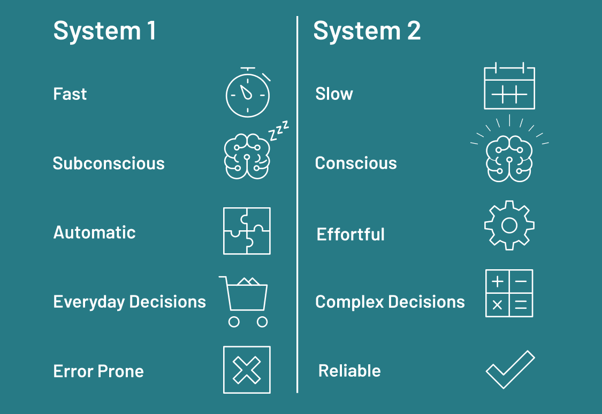

Product Requirements & Market Research
Curing Focus Debt Through Contextual Mentorship.
The AI Rubber Duck is a visionary shift-left assistant. It moves beyond basic syntax autocomplete to act as a proactive collaborative partner, enforcing the 3 W's of Testing and eliminating "Network Hopping."
The "Focus Debt" Crisis
This section explores the severe impact of interruptions on modern software engineering. Based on research by Dr. Gloria Mark[2], we visualize the exponential cognitive cost of context switching and how the modern attention span has collapsed, turning senior engineers into overwhelmed "human routers."
To return to original task after interruption.[2]
The Attention Collapse (2004 - 2024)
The Solution: Active Mentorship
Here we contrast traditional problem-solving methods with our active AI solution. By simulating pair programming, the AI Rubber Duck secures a significant "Quality Dividend." We also map out exactly how this tool provides specific value metrics to different roles within the engineering ecosystem.
System 1 vs System 2 Thinking[1]
Passive (Traditional Duck)
Developer explains problem line-by-line to an inanimate object to trigger analytical (System 2) thinking. High effort, zero contextual feedback.
Active (AI Rubber Duck)
Acts as an active listener. Asks probing questions: "Does this align with our ADR on Micro-frontends?" Forces logic justification against organizational standards.
Based on University of Utah studies, pair programming yields fewer defects and boosts developer confidence by 90%.[3]

Image credit: Neurofied
Target Personas & Value Metrics
The Active Builder
Wants to avoid interrupting seniors for trivial architectural questions.
The Learner
Navigating a massive, unfamiliar codebase with complex internal patterns.
The Rapid Prototyper
Needs high-level summaries of Jira progress and rapid context-switching capabilities.
The Knowledge Source
Tired of answering the same pattern questions repeatedly, draining energy.
The "Context Flywheel" Moat
Codifying Human Knowledge to drive human innovation by protecting deep focus
This section breaks down the core technical advantage: the RTR_MCP (Model Context Protocol). It illustrates how the tool integrates into existing workflows without retraining, connecting fragmented data sources to create an organizational self-learning loop.
Specialized MCP Servers Integrated
Competitive Differentiation
Finally, we compare the AI Rubber Duck against dominant market players like Cursor/Copilot and Sourcegraph Cody. This visualization highlights our strategic choice to prioritize architecture, guardrails, and context over pure, unchecked code generation velocity.
Strategic Radar Analysis
Footnotes & References
-
System 1 & System 2 Thinking.
Popularized by Daniel Kahneman in Thinking, Fast and Slow (2011). System 1 is fast, automatic, emotional, and unconscious — handling routine decisions and intuition. System 2 is slow, deliberative, logical, and effortful — used for complex problem-solving and conscious reasoning.
Kahneman, D. (2011). Thinking, Fast and Slow. Farrar, Straus and Giroux. ISBN 978-0374275631. -
The Cost of Interrupted Work.
Dr. Gloria Mark's research at UC Irvine found that it takes an average of 23 minutes and 15 seconds to return to a task after an interruption, with workers typically handling two intervening tasks before resuming. Her longitudinal studies (2004-2024) also documented the decline of sustained attention from 2.5 minutes to just 47 seconds.
Mark, G., Gudith, D., & Klocke, U. (2008). "The Cost of Interrupted Work: More Speed and Stress." Proceedings of CHI 2008, ACM.
Mark, G. (2023). Attention Span: A Groundbreaking Way to Restore Balance, Happiness and Productivity. Hanover Square Press. ISBN 978-1335449412. -
The Quality Dividend of Pair Programming.
A study conducted at the University of Utah found that pair programming produces code with 15% fewer defects than solo programming, while also boosting developer confidence by approximately 90%. The collaborative approach encourages continuous code review and knowledge transfer.
Williams, L., Kessler, R.R., Cunningham, W., & Jeffries, R. (2000). "Strengthening the Case for Pair Programming." IEEE Software, 17(4), 19-25.
Cockburn, A. & Williams, L. (2001). "The Costs and Benefits of Pair Programming." Proceedings of XP 2001, Università degli studi di Cagliari.